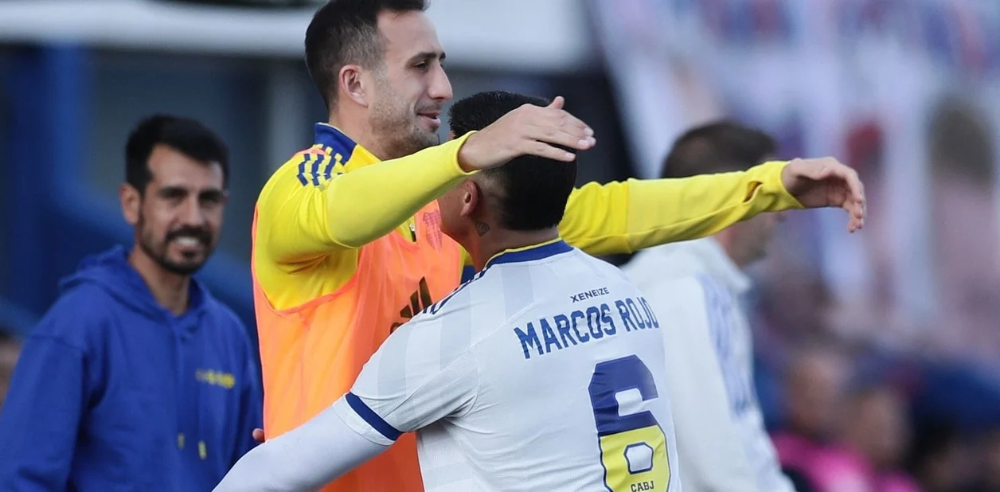

OPINIÓN
A cada JR le llega su Topo Gigio
El abrazo de Rojo a Izquierdoz fue un gesto que desafía abiertamente la autoridad de Riquelme y el Consejo.
El de Izquierdoz era un conflicto evitable
LA poco de haber despedido a Battaglia, sacar al capitán de Boca sin motivos futbolísticos creó más tensiones.